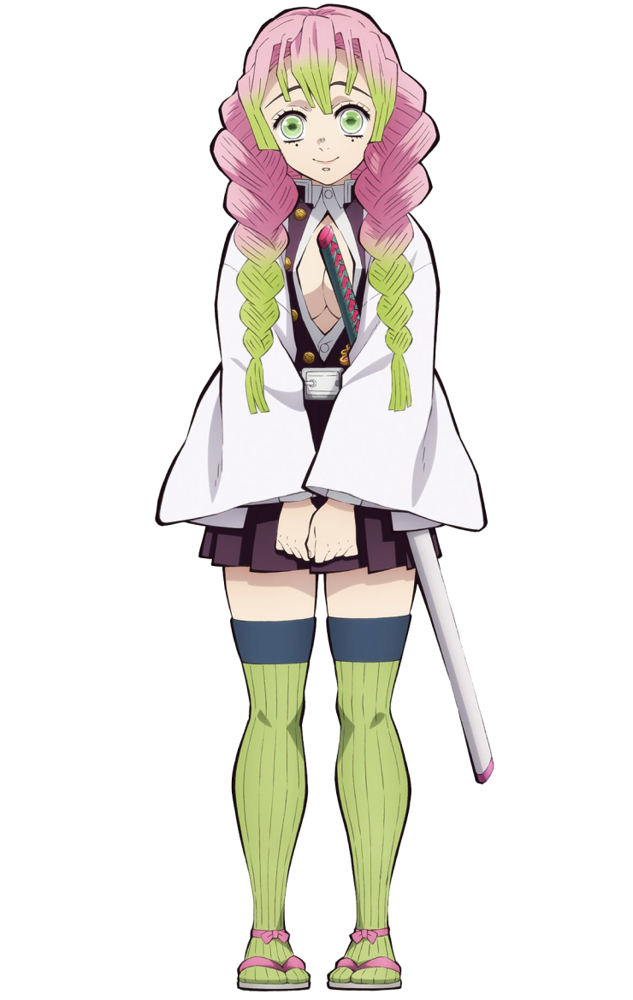

Go Back
Mitsuri Kanroji
Breathing style: LOVE BREATHING
Mitsuri Kanroji is a major supporting character of Demon Slayer: Kimetsu no Yaiba. She is a Demon Slayer of the Demon Slayer Corps and the current Love Hashira.